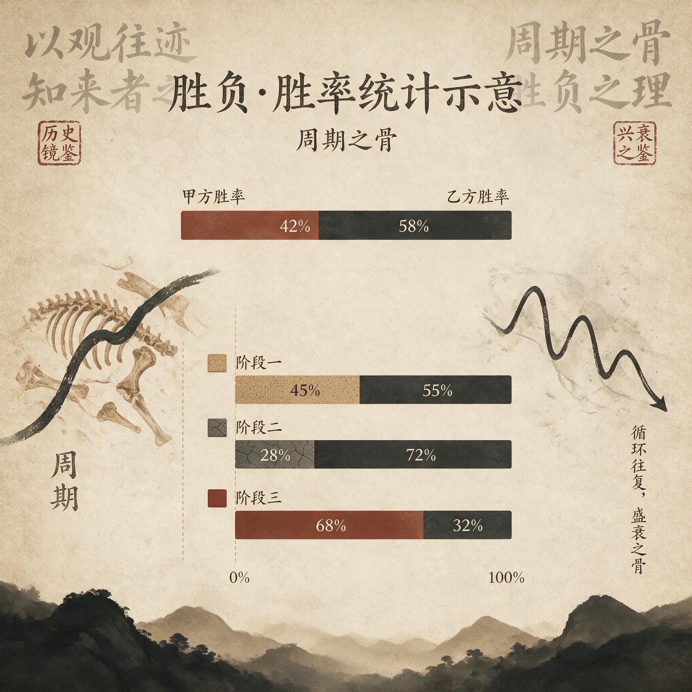

第 7 章
周期之骨
2023年8月14日的龙虎榜披露文件躺在深圳证券交易所官网的例行公告栏里，格式与其他任何一个交易日完全一致。买入金额最大的前五名，卖出金额最大的前五名，营业部名称，买入金额，卖出金额，净买入额。表格线条僵硬，数字排列整齐。
这份文件本身不携带任何情绪——它只是按照《深圳证券交易所交易规则》第5.1.3条强制披露的异常波动数据汇总。同一只个股的另外八份龙虎榜披露文件分散在前后十七个交易日中。
把它们按时间顺序排列在桌面上——第1天、第3天、第5天、第7天、第8天、第10天、第12天、第15天、第17天——九张表格构成了一套连续的席位影像档案。单独阅读其中任何一份，你只能看到当天哪些席位买了、哪些席位卖了。
连续阅读九份，席位名称开始呈现出运动轨迹：某些营业部在特定日期集群出现，又在特定日期集体消失；某些席位从买入栏迁移到卖出栏；某些席位始终只出现在表格的某一侧。这套运动轨迹不是随机的。它遵循着一套比个股K线更底层的秩序。
这套秩序就是情绪周期的骨骼。但在进入那副骨架的完整结构之前，必须先处理一个被反复误解的前提。过去十年间，“情绪周期”这个词在短线交易领域被过度使用到了丧失可操作含义的程度。交易者在收盘后会指着已经走完的分时图说“今天是分歧转一致”，会在连续亏损三天后说“退潮期必须管住手”，会在错过涨停板后说“高潮期不敢追是纪律问题”。
这些表述共享一个特征：它们全部是事后命名。当日内分时走完、涨停封死或者炸板回落之后，交易者从既成结果反推阶段标签，然后把标签贴在已经发生的行情上。这不是周期判断。这是归因幻觉。
真正的周期判断必须发生在盘中——在分时图还在跳动、成交明细还在刷新、龙虎榜数据尚未公布的时刻。
情绪周期不能是解释市场波动的修辞。它必须是一套具备可识别结构、可验证节点与严格因果次序的认知骨架。骨架的功能不是让你在收盘后解释为什么涨了跌了，而是在盘中告诉你：你现在站在哪里，你能做什么动作，你不能做什么动作。
大多数学习龙头战法的人之所以反复亏损，并非因为误判了某一天的强弱。他们误判强弱的情况当然大量存在，但那不是根源。根源在于他们从未在头脑中建立起周期的时间容器。
他们把每一个交易日当作独立事件来处理。今天涨停了就确认模式有效，明天跌停了就怀疑模式失效。他们用个股的涨跌替代了对阶段位置的判断。
一只龙头股在分歧期涨停和在退潮期涨停，表面上都是涨停，分时图可能都走出了早盘秒板的形态——但这两次涨停所承载的风险权重截然不同。分歧期的秒板是资金从观望转向进攻的信号，退潮期的秒板是残余流动性制造的陷阱。如果你没有周期容器，你看到的就是两次完全相同的交易机会。你会用同一种仓位、同一种预期去参与它们。然后你会在一半的时间里亏钱，并且无法理解为什么。
第6章已经给出了统计答案。龙头战法的正期望只存在于一致期和高潮期，这两个阶段合计覆盖约40%的交易时间。在分歧期和退潮期——覆盖60%的时间——龙头战法的期望值为负。
这意味着一个没有周期框架的交易者，如果他在所有时间内均等参与，长期期望值天然为负。这不是选股能力问题，不是执行纪律问题，不是资金管理问题。这是时间分配问题——你在错误的时间做了正确的事，结果仍然是错误的。
有人会提出一个看似合理的反驳：如果严格执行止损纪律，即使在退潮期也能控制单笔亏损幅度，长期仍可通过盈亏比优势实现盈利。这个反驳在逻辑上成立，但它回避了一个关键事实——退潮期的止损触发频率远高于一致期和高潮期。在一个负期望阶段内频繁止损，交易成本、滑点损失和连续止损对心理资本的侵蚀，三者叠加足以摧毁任何纪律系统。
纪律不是独立于阶段而存在的变量。纪律的有效性本身依赖阶段。在高潮期，宽松的止损反而能拿住主升浪；在退潮期，严格的止损只是让你以更小的单笔亏损完成更快的连续失血。
周期框架的首要功能不是帮你找到盈利机会——那是次要功能——它的首要功能是帮你识别哪些阶段根本不该参与。现在回到那九份龙虎榜披露文件。
这轮中级情绪周期持续了十七个交易日，载体是一只当时被市场标记为“龙头”的个股。名字无关紧要——骨架与名字无关，它只与席位的行为序列有关。九份榜单按时间排列后，席位结构呈现出四个截然不同的段落。
第一段：第1天至第4天。这四天的龙虎榜买方席位以中小体量游资为主。单席位买入金额分布在800万到1500万之间，没有出现超过2000万的重仓席。卖方席位分散，三家到五家营业部各自净卖出300万到800万，没有机构专用席位的系统性卖出。
最关键的特征不在金额而在连续性：同一个席位不会连续两天出现在买方。第1天的买一席位在第2天的榜单上消失了——既不在买方也不在卖方，完全退出。第2天的买一在第3天同样消失。
这是分歧期的席位指纹——资金在试探，没有人愿意锁仓。每一个买入席位都在次日选择卖出或者观望。涨停板的封板时间偏晚，通常在上午十点半之后才触及涨停价位，封单量不稳定，盘中多次开板又回封。
首板涨停占当日全部涨停家数的82%，二连板以上占比仅18%，最高连板高度卡在3板。
第二段（第5天至第8天），龙虎榜的结构发生了质变。第5天，一家市场公认具备锁仓习惯的游资席位首次出现在买一位置，净买入3200万元——这是本轮周期中第一笔超过3000万的单席位买入。次日，该席位未出现在卖方榜单上。它在锁仓。同日，另一家同等量级的游资席位在买二位置净买入2600万元。第7天，两家席位同时锁仓，买方榜单上出现了第三家游资席位净买入2100万元。这是席位接力意愿最清晰的信号：先进场的资金不急于兑现利润，新进场的资金愿意在更高的价位承接筹码。
涨停板的封板时间提前到上午九点四十五分之前，封单量稳定在流通市值的5%以上。
日均涨停家数从38家上升至52家，二连板以上占比升至33%，最高连板高度扩展至5板。昨日涨停指数次日开盘平均溢价率从0.7%跳升至2.1%，盘中负溢价时间占比从45%骤降至12%。
第三段（第9天至第13天），龙虎榜的结构再次改变。
第10天，一家机构专用席位出现在买三位置，净买入1800万元——这是本轮周期中机构席位的首次现身。同一份榜单上，此前锁仓的格局游资买入金额从3200万缩减至900万。它在减仓而非加仓。
第12天，买方前五名中出现了三个东财拉萨团结路的散户席位，合计净买入不足2000万元；卖方前两名是此前锁仓的两家格局游资，合计净卖出超过8000万元。席位移交在这一刻完成：从游资到机构再到散户，筹码沿着一条可预测的路径向下流动。
涨停板封板时间重新推迟到上午十点之后，盘中开板次数增加但收盘仍能封死。日均涨停家数达到71家的峰值，但最高连板高度连续第三天停滞在5板不再向上突破——涨停数量在膨胀而高度在停滞，这是扩散取代聚焦的背离信号。昨日涨停溢价率从2.5%的高点回落至1.8%，尾盘炸板率从8%跳升至19%。
第四段（第14天至第17天），龙虎榜的结构彻底瓦解。
买方前五名全部是散户席位和量化基金的T+0策略席位，单席位买入金额均低于500万元。卖方前两名合计卖出超过6000万元。格局游资已经从榜单上完全消失——不是减持，是消失。机构专用席位也不再出现。剩下的只有散户之间的互相倒手和量化策略的日内回转交易。
涨停板消失了，取而代之的是低开低走和尾盘跌停。日均涨停家数骤降至29家，最高连板高度压缩至2板。昨日涨停溢价率转为-1.3%，盘中负溢价时间占比飙升至67%。
这四段结构不是某一只个股的孤例。它是情绪周期在龙虎榜上的通用投影。把过去五年间任何一轮中级情绪周期的龙头股龙虎榜按相同方式排列——不分行业、不分题材、不分市值大小——你会看到类似的席位移交序列：中小游资试探→格局游资锁仓→机构与散户接筹→格局游资出货→散户与量化留守。
这个序列的推进速度因周期而异，某些周期可能在八个交易日内走完全程，某些可能持续二十个交易日以上。但次序是固定的。
分歧永远在一致之前，高潮永远在退潮之前。你不可能在一轮周期中先看到机构接筹再看到游资锁仓，不可能先看到退潮再看到高潮。因果次序不可逆。
这就是骨架的第一层结构：情绪周期不是四个标签的随意粘贴，而是一套严格的事件序列。
每一个阶段都有其专属的席位行为指纹。分歧期的指纹是游资试探与快速轮换——同一席位不连续出现。一致期的指纹是格局资金锁仓与接力意愿上升——先入者不卖，后来者愿买。高潮期的指纹是机构介入与散户涌入——专业资金开始配置，非专业资金开始跟风。退潮期的指纹是主力离场与流动性枯竭——大资金消失，只剩下散户和机器。
这些指纹可以在盘中被观测——不需要等到龙虎榜收盘后公布。涨停家数的结构变化、连板高度的分布偏移、昨日涨停指数的溢价率波动，三组数据构成了席位移交的同步指标。它们实时更新，交易者可以在盘中随时读取。以同一轮周期为例。
一个交易者在第11个交易日早晨打开交易软件时，他可以看到前一日收盘后的数据：涨停71家（仍处于高位区间），但最高连板高度连续第三天卡在5板（停滞），昨日涨停溢价率从2.5%的高点回落至1.8%（衰减）。三组数据组合在一起构成了一套比任何个股K线都更可靠的阶段定位系统。它们告诉他：高潮正在接近末端，扩散正在取代聚焦。在这个位置上追涨龙头股的期望值已经大幅下降。
但他不会看这些数据。他看的是龙头股的分时图——早盘低开高走，十点钟封上涨停板，封单量一度达到流通市值的8%。分时图告诉他：强势依旧。于是他打了板。
当天下午两点四十分，涨停被一笔5000手的卖单砸开。他告诉自己这是洗盘。第二天低开5%，他补了仓。
这不是纪律问题。这是缺乏认知骨架的问题。
骨架的第二层结构涉及一个更隐蔽的维度：周期阶段的转换不是由价格触发的，而是由资金行为的边际变化触发的。高潮期的结束不是因为龙头股跌了——龙头股在高潮期结束时往往还在涨。
结束是因为格局资金开始减仓而散户开始接筹，是因为连板高度停滞而涨停家数仍在膨胀，是因为昨日涨停溢价率从加速上升转为减速上升再转为走平。这些信号全部出现在价格见顶之前。
2023年8月这轮周期中，龙头股的最高价出现在第12个交易日。但高潮期的结束信号在第10个交易日就已经发出——那一天机构席位首次现身买方而格局游资的买入金额从3200万缩减至900万。此后两个交易日龙头股继续上涨了6%，然后在一个星期内跌掉了此前全部涨幅的40%。
事后回看，第10天是减仓的最佳时机。但在第10天的盘面上一切看起来都很好：龙头股涨停封死，板块内多只跟风股涨停助攻，成交额温和放大，没有任何恐慌迹象。唯一提示风险的是龙虎榜上的席位移交——而这份龙虎榜在第10天收盘后才公布。
这引出一个无法回避的问题：如果你只能在收盘后看到龙虎榜数据，那么席位移交的先行信号还有什么用？答案是：龙虎榜不是用来做盘中决策的。龙虎榜是用来校准你的盘中观测系统的。
当你连续多轮周期看到“机构现身买席+格局游资缩量”这一组合总是出现在高潮期末端时，你就可以在盘中寻找与之对应的同步指标——连板高度停滞、涨停家数背离、炸板率上升——这些指标在盘中实时可用。龙虎榜是骨骼的X光片，它让你看到皮肉之下的结构；但你在实际行走时依靠的是肌肉和神经的反馈——即盘中实时数据。
这就是骨架的第三层结构：框架的功能不是预测拐点，而是约束交易者只在特定阶段做特定动作。
预测拐点是一个诱人但不可能完成的任务。没有任何一套系统可以精确预测高潮期在哪一天结束、退潮期在哪一天开始。试图预测拐点的交易者最终都会陷入同一种困境：他们在高潮期的第三天就开始减仓避险，结果错过了此后五天的加速上涨；他们在退潮期的第二天就进场抄底，结果接住了还在坠落的飞刀。预测拐点本质上是试图战胜时间的不确定性——而时间的不确定性是无法战胜的。
框架的逻辑与此截然不同。框架不要求你预测拐点。它只要求你识别当下处于哪个阶段，然后在该阶段内执行预设的动作集。
分歧期的动作集是：小仓位试探，快速止损，不格局。一致期的动作集是：正常仓位参与，允许锁仓，跟随接力资金加仓。高潮期的动作集是：只减不加，逐步兑现，不新开任何仓位。退潮期的动作集是：空仓或极小仓位做逆回购，不参与任何涨停板交易。
这套动作集的有效性不依赖于对拐点的精确预测。它只依赖于一个前提：阶段是可识别的。如果你能在第5天识别出一致期的到来——涨停家数突破50家、连板高度突破3板、昨日涨停溢价率稳定为正——那么你就可以在第5至第8天执行一致期的动作集。至于一致期是在第8天结束还是第10天结束，这不重要。重要的是你在一段正期望的时间窗口内参与了交易，并且在高潮信号出现后停止了加仓。
把盈亏从“猜”转移到“等”——这就是框架的核心功能。“猜”是试图预测明天涨跌。“等”是等待阶段信号出现后再行动。
分歧期末端出现格局资金锁仓信号时进场；高潮期末端出现席位移交信号时离场；退潮期没有信号就空仓等待。
交易者的工作不是预测市场，而是识别信号并执行动作集。这个逻辑会遇到一个强有力的反方论点：如果龙头战法的亏损主因是执行纪律不严和资金管理失控，那么情绪周期框架不过是另一种形式的事后归因叙事装置——任何策略只要严格执行都能盈利，何必绕一个情绪周期的弯子？
这个反方论点值得被正面拆解。它正确地指出了执行纪律的重要性，但它混淆了两个不同层次的问题。执行纪律解决的是“怎么做”——止损设几个点、仓位分几成、什么条件下加仓减仓。情绪周期框架解决的是“什么时候做”——在什么阶段使用这套纪律参数。
考虑一个具体的情境。某交易者设定了一套严格的纪律系统：单票仓位不超过三成，亏损7%无条件止损，盈利超过15%分批止盈，同一板块最多同时持有两只个股。他在2023年8月这轮周期中严格执行了这套系统。分歧期他试探了两只龙头股各一成仓位：一只触发止损亏损5%，一只盈利8%止盈出局。一致期他识别出信号后将仓位加至三成，龙头股主升浪让他盈利22%。
高潮期他按照纪律分批止盈，最终锁定了18%的利润。退潮期他空仓观望。这个交易者盈利了。他的纪律系统运作良好。
但请注意一个关键细节：他的纪律参数在不同阶段产生了截然不同的结果。分歧期的一成仓位试探产生了净盈亏近乎持平的结果——扣除交易成本后净盈不足2%。一致期的三成仓位主升浪产生了22%的盈利——这是整个周期的利润来源。高潮期的止盈纪律保护了利润但并未创造新利润。退潮期的空仓纪律避免了亏损但也未产生利润。
现在假设同一个交易者使用完全相同的纪律参数，但他无法识别阶段。他在分歧期用一成仓位试探——这没问题。但他无法判断一致期何时到来，于是他在一致期已经开始的第二天仍然只使用一成仓位——他少赚了本该属于他的利润。或者更糟：他在高潮期误以为仍是一致期，继续使用三成仓位——他在本该减仓的位置加了仓。
他的纪律参数没有变，止损7%仍然严格执行了，仓位上限三成仍然遵守了。但他的盈亏曲线完全不同了。纪律系统的参数本身是中性的。
同样的纪律参数在不同的阶段分布下产生截然不同的长期期望值。“任何策略严格执行都能盈利”这个命题在统计上是错误的——它隐含的前提是策略本身具有正期望值，而策略的期望值不是由纪律决定的，是由策略所适用的时间窗口的统计特征决定的。严格执行可以让正期望策略的盈利更稳定，也可以让负期望策略的亏损更规律——但它不能把负期望变成正期望。
情绪周期框架不是另一种纪律系统。它是纪律系统的操作系统。它告诉你何时加载策略、何时卸载策略、何时切换策略参数。
现在可以把这三层结构叠合在一起了。最底层是事件序列：分歧→一致→高潮→退潮。因果次序不可逆，每一个阶段都为下一个阶段埋下前因——分歧期的锁仓意愿决定了一致期的强度；一致期的强度决定了高潮期的扩散幅度；高潮期的扩散幅度决定了退潮期的清算深度。
中层是可观测的行为指纹：席位移交轨迹、涨停家数结构、连板高度分布、溢价率波动。这些指标在盘中实时更新，构成了一套定位系统。
分歧期的指纹是中小游资快速轮换、涨停家数低于40家、连板高度受限、溢价率不稳定甚至转负。一致期的指纹是格局资金锁仓、涨停家数突破阈值、连板高度扩展、溢价率稳定为正。高潮期的指纹是机构与散户接筹而格局资金缩量、涨停家数继续膨胀但连板高度停滞、溢价率从加速转为走平、炸板率上升。退潮期的指纹是主力席位消失、涨停家数骤降、溢价率转负。
最上层是动作集约束：每一阶段对应一组预设的交易动作。分歧期——小仓位试探或不参与；一致期——正常仓位参与；高潮期——只减不加；退潮期——空仓。
这三层结构共同回答了一个问题：如何在不确定性中建立确定性？答案不是消除不确定性——不确定性是市场的基本属性，无法消除也无法回避。答案是在不确定性中标定出确定性的区域：某些资金行为模式在特定条件下会以高概率重复出现；
某些阶段转换信号在历史回测中表现出稳定的先行特征；某些动作集在特定阶段内的长期期望值为正。这些确定性不是绝对的——它们是基于统计规律的相对确定性——但它们足以构成一套可操作的认知框架。

回到2023年8月那轮周期。第1天到第4天：中小游资试探性买入，席位每日轮换无连续性；日均涨停38家；连板高度卡在3板；溢价率0.7%且盘中负溢价时间占比45%。框架判断：分歧期。动作集：小仓位试探或不参与。
第5天到第8天：格局游资首次重仓买入并锁仓；日均涨停52家；连板高度扩展至5板；溢价率跳升至2.1%且负溢价时间骤降至12%。框架判断：一致期确认。动作集：正常仓位参与。
第9天到第13天：机构首次现身买方但格局游资买入金额大幅缩量；日均涨停71家但连板高度停滞在5板不再扩展；溢价率从2.5%回落至1.8%；炸板率从8%跳升至19%。框架判断：高潮扩散末期。动作集：只减不加。第14天到第17天：格局游资和机构从榜单完全消失；
散户和量化基金占据买卖双方；日均涨停骤降至29家；溢价率转负至-1.3%；负溢价时间占比飙升至67%。框架判断：退潮期。动作集：空仓。
这十七天里龙头股的最高涨幅为47%。一个严格执行框架动作集的交易者，他的实际收益可能落在15%到25%之间——取决于他在一致期的具体进场时机和高潮期的具体减仓节奏。他不可能吃到全部涨幅，因为框架要求他在高潮信号出现后减仓而非等到价格见顶。他会错过最后那6%的涨幅——那6%属于那些在高潮期末端仍满仓追涨的人。但那些人也将在接下来的退潮期中把利润还给市场。
框架牺牲了顶部的不确定利润，换取了避免退潮期回撤的确定性保护。这是一笔不对称的交易：放弃6%的潜在收益以规避30%以上的潜在回撤。统计上这笔交易是正期望的——前提是你接受框架对你的约束。
大多数人无法接受这种约束。这就是本书此前六章逐一解剖的那些现象的共同根源。
“擒龙社”的会员们在退潮日打出“龙头不死信仰不灭”，是因为他们没有周期容器——他们看不到自己正站在退潮期的流沙上。“北境游资”从浮盈40%到亏损22%，是因为他在高潮期末端把浮盈当成了本金继续加仓——他没有阶段定位系统告诉他此刻的动作集是只减不加。补涨与卡位的追逐者们蜂拥买入补涨龙，是因为他们误把高潮扩散期的流动性溢出当成了新的独立行情启动——他们看不到补涨股只是龙头情绪的滞后投影。
所有这些人都不缺技术能力。他们能看懂分时图，能分析龙虎榜数据，能计算盈亏比和胜率。他们缺乏的是一个能把所有这些技术工具组织成因果结构的认知骨架。他们手里有砖头、水泥和钢筋，但没有建筑图纸。
建筑图纸不能保证房子不会塌。但它能保证你知道哪些墙是承重墙——不能拆；哪些空间可以自由隔断——可以改。情绪周期框架不能保证你每一笔交易都盈利。
但它能保证你知道哪些阶段的亏损是必须承受的交易成本——分歧期的试探性亏损——哪些阶段的亏损是可以避免的无知税——退潮期的追涨亏损。
现在这副骨架已经摊开在桌面上。四块骨节排列有序：分歧、一致、高潮、退潮。每一块骨节都有其独特的结构特征和行为指纹。它们之间的连接方式不是松散的叙述关联而是严格的因果传递。
但这副骨架有一个无法回避的局限：它能告诉你当下处于哪个阶段，能约束你在当下应该做什么动作——但它不能回答一个更根本的问题：阶段转换的临界点在哪里？分歧何时结束？一致何时确认？高潮何时见顶？退潮何时触底？
框架无法回答这些问题是因为这些问题本身设置错了前提。“分歧何时结束”不是一个时间点问题而是一个条件满足问题——当格局资金开始锁仓、当连板高度突破3板、当溢价率稳定转正时，分歧就结束了。“一致何时确认”同样是一个条件满足问题——确认不是在某个精确时刻发生的而是在一系列信号叠加后成立的。这意味着交易者必须学会在模糊边界中做出判断。
分歧期末端和一致期初端之间没有一道清晰的红线——它们重叠在一个大约两到三个交易日的过渡带内。在这个过渡带中某些信号已经转正而另一些信号仍为中性或负值。交易者的工作是在这个过渡带内逐步调整仓位——从分歧期的一成试探仓逐步加至一致期的三成主攻仓——而不是等待某个神奇的确认信号出现后一键满仓。
这种渐进式仓位调整本身就是框架的一部分。它承认边界是模糊的并为此设计了容错机制：如果你在过渡带内加仓过早而一致确认失败——假突破——你的一成额外仓位会遭遇止损但总损失可控；如果你在过渡带内加仓过晚而一致确认已经完成——踏空——你仍有底仓在场内不会完全错失行情。容错机制不是预测准确性的替代品而是对预测不可能性的务实回应。
至此骨架的全貌已经呈现完毕。但呈现完毕不意味着问题已经解决。一副骨架摆在解剖台上是一回事；用它来指导活体手术是另一回事。框架提供了地图但尚未标注地形细节；标出了主干道但尚未标示塌方路段和断头路；
告诉了你应该在哪个区域扎营但尚未说明那片区域的水源和猛兽分布。所有周期都从分歧开始。分歧是种子的形态时期——它决定了这轮周期会长成一棵灌木还是一棵乔木。大多数交易者的亏损并非发生在退潮期而是发生在分歧期：他们误把分歧当成了退潮于是在本该试探的位置选择了空仓；又误把退潮当成了分歧于是在本该空仓的位置选择了试探。分歧阶段的内部结构本身就是一套微缩版的完整周期。这副骨架已经给出了定位系统。现在需要的是把定位系统的第一颗螺丝拧开看看里面究竟是什么构造。